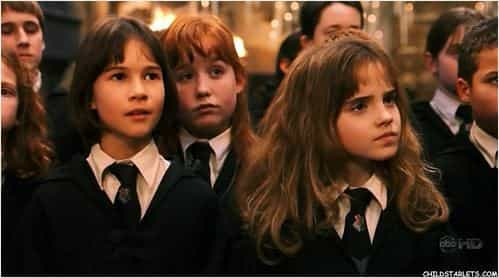
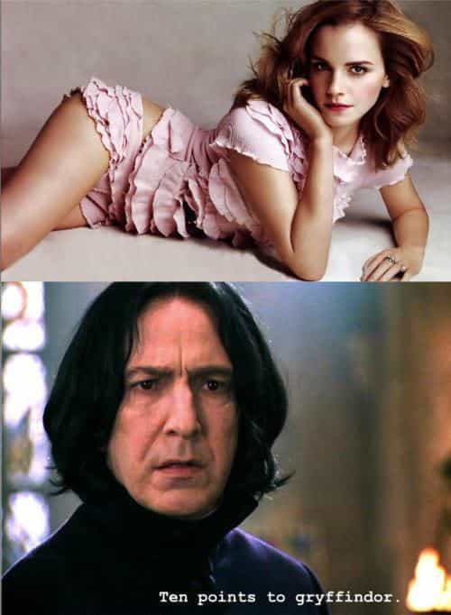

Thomas Hobbes is an Australian uni student hiding out in his mother's basement waiting for the singularity to arrive. As a backup plan he is secretly hoping to avoid the perils of an actual career by becoming a writer and travelling the world.


Already on this site we’ve expressed our disappointment that franchises like Mad Max, Star Wars, Game of Thrones and so many others have bowed before the social justice crowd. Unfortunately, Harry Potter is now among them.
The latest nonsense issue drummed up by the laughable degenerates of the far-left is the casting of black actors in the latest Harry Potter adaptions. The controversy began with the recent announcement that actress Noma Dumezweni – a black actress from Swaziland, with be playing a grown-up Hermione in the upcoming stage play Harry Potter and the Cursed Child, which is meant to serve as a sequel to the books.
The one on the right
The responses have varied from unbounded enthusiasm to uneasy disbelief. If like I, you fall in the latter camp, don’t worry, it just proves you still retain an ounce of sanity.
We’ll get one thing right out of the way—many news articles, brimming with narcissistic contempt, have tried to get away with claiming that the character’s skin color is “never specified in the books.”
The internet has already called bullshit:
Prisoner of Azkaban – pg 293
Hermione Granger is white. I don’t even care if J.K.Rowling (all hail) has forgotten her own words. Saying the character is black is a retcon. It’s not even like saying Dumbledore is gay, as this is left genuinely ambiguous in the books. No, this would be like saying the Dumbledore is actually a bald, overweight guy from Kentucky who sells Sherbet Lemons on the side.
But back to the point, so what exactly is the “problem” with a black Hermione? It is a surrender.
If the people wanting to create a “black Harry Potter” had a shred of integrity, dignity or creativity, here’s what they’d actually do. They wouldn’t just go and cast black actors to play a bunch of very English characters, speaking English, in a book set in England, written by a blonde white English woman. It is about as intellectually lazy as I can imagine.
Instead, if you had any decency, you’d create your own series with specifically black characters, hopefully set in a black country, with its own black culture. Trust me this isn’t hard. In fact, we’ve seen it done before. The first example that comes to my mind concerns Schindler’s List, Steven Spielberg’s historical epic about the holocaust. If you were a social justice warrior, you might be jealous of the film’s success. How dare a Jewish director cast white actors in a film set in Europe during World War Two?
You may then demand that, to be “fair,” Hollywood must go and make a black version of the film. We must cast a black man as Oskar Schindler! Have a black commandant running the concentration camp! Even a little black girl wearing the red dress! Or instead, you could be like a sane person and go make a similar but different film, with similar themes, about an event actually relevant to Africans. Hence, we get a movie like Hotel Rwanda.
The real ‘black Oskar Schindler’
This was a movie released in 2004 that tells the real story of Paul Rusesabagina – the manager of a hotel in Kigali, Rwanda who protected 1,200 Hutu and Tusti refugees from the machete wielding mobs during the 1994 genocide. I happen to have seen it, and it’s not a bad film. Certainly, many have compared it to Schindler’s List, and there can be little doubt it was inspired by it, but ultimately it tells its own unique story. This is my point.
Don’t be half-assed about it. If you’re going to make a black Harry Potter, then do it properly. Go and make your own young-boy-discovers-he-is-a-wizard fantasy universe, set in Africa. Don’t be lazy and just copy what some white English single mother from Gloucestershire came up with one day on a delayed train from Manchester to London.
‘Down with whitey bruthas!’
Simply casting a Swaziland actress as Hermione Granger doesn’t make the film one iota more about Africans. It does nothing to help the promotion of black culture. If anything, it’s a surrender. You’re literally admitting—“well no black author could ever write a story this good, better just copy what that blonde white English woman did and call it a day…”

As some may point this out, yes I understand that many aspects of quintessentially “white” culture have a foreign basis. We all know Star Wars had a plot inspired by The Hidden Fortress, but George Lucas didn’t just cast Mark Hamill and Harrison Ford as Tahei and Matashichi and call it a fucking day. He added to the story, set it in space and all that shit.
What does casting a black actress actually add to the story – other then making 400 million Harry Potter fans roll their collective eyes while like fifty SJWs—most of them Guardian journalists—shit themselves with excitement?
I’d also object if someone pointed out the way many Hollywood films whitewash characters in historical movies like Troy or Gladiator. True, its not ideal, but generally I wouldn’t call that being racist or lazy. There’s just something of a shortage of ancient Roman and Greek actors in the 21st century. But I’m sure there’s plenty of modern white actors to play modern white characters.
Unfortunately, things like your race, sex, eye color, hair color, looks, voice, accent, personality—these things are all a part of you. Audiences would be surprised if someone cast me—a skinny, twenty-something Australian guy—as Mohammad Ali or Nelson Mandela. A black Hermione can only be political—and we should rightly laugh at the absurdity of it.

At this point, you’re probably expecting me to call for a boycott of the stage play when it comes out later this year. And hell, why not? Its the fastest way for us to get in the news. But honestly, I don’t care. Yes I’m disappointed that Harry Potter is now bending to a vocal minority on the far-left. We’re here again, that lone voice in the crowd saying—“Um, guys? Isn’t this kinda crazy?” I’m simply here to wonder, why does everyone else so covet the stories told by us villainous (and usually male) white people?
You never see this happening overseas. We simply don’t hear people saying, “So why aren’t there more white actors in Seven Samurai.” Rather than complain about it, instead they went and made The Magnificent Seven. I’d say, let Japanese people cast Japanese actors in Japanese movies about Japanese culture. Let the Chinese do the same, plus the Arabs, Indians, Africans, and so on. Oh—and those evil white people, them too.
I’m sorry guys, but Harry Potter and his friends are most definitely White Anglo-Saxon Wizards. There’s no point pretending otherwise.
Read More: Why Do You Care If Black Guys Like Fat White Girls?